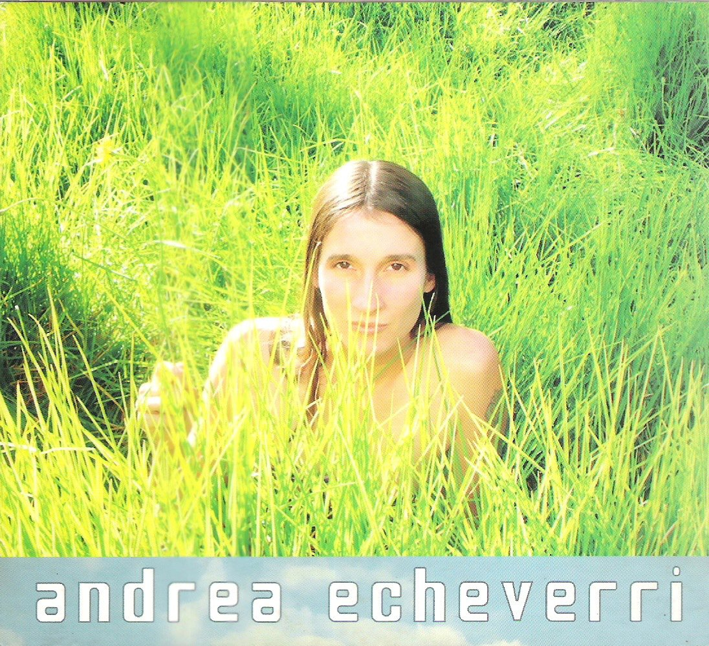

El Mundo de las Abejas: Secretos de la Naturaleza y la Apicultura
Las abejas melíferas (Apis mellifera) desempeñan un papel fundamental en la preservación de la biodiversidad y la seguridad alimentaria, ya que son responsables de la polinización del 75% de los cultivos que constituyen un tercio de la alimentación humana (FAO, 2021). La importancia de estos pequeños polinizadores se refleja en la producción de alimentos como el café, cacao, aguacate, frutas tropicales y hortalizas, cuya supervivencia depende en gran medida de la actividad de las abejas. No obstante, las poblaciones de abejas están disminuyendo alarmantemente debido a factores como la agricultura intensiva, el uso de pesticidas y el cambio climático (UNEP, 2022), lo que pone en riesgo tanto la biodiversidad como la producción agrícola global.
Proyecto Apícola en Garzón, Huila
En el municipio de Garzón, Huila, las abejas africanizadas son predominantes y, aunque son eficientes en la producción de miel y polinización, presentan desafíos como alta agresividad y enjambrazón. Por ello, se ha diseñado un proyecto que busca mejorar la genética de la población local mediante la introducción de abejas italianas, conocidas por su comportamiento más dócil. Utilizando inseminación instrumental en laboratorio, se pretende replicar las características menos defensivas de las abejas italianas, comparando los resultados con la inseminación natural. Este enfoque permitirá evaluar la oviposición de las reinas en ambos grupos y analizar la postura de las reinas, así como algunas características físicas de las abejas obreras nacidas de estas. Este proyecto no solo busca resolver los desafíos apícolas locales, sino también contribuir a la mejora en la polinización de cultivos esenciales como café, cacao y aguacate, aumentando así la producción de miel en la región y fortaleciendo la economía local.

Bibliografía
Andrea Echeverri, nacida el 13 de septiembre de 1965 en Bogotá, Colombia, es una cantante, compositora y activista ambiental conocida por ser la vocalista de la banda de rock alternativo Aterciopelados. Desde los años 90, ha sido una figura prominente en la música latinoamericana, destacándose no solo por su talento musical sino también por su compromiso con causas sociales y ambientales. Aterciopelados, la banda que cofundó junto a Héctor Buitrago, ha abordado temas como la paz, la igualdad de género y la conservación del medio ambiente en sus canciones. Andrea ha sido una defensora activa de la biodiversidad y ha participado en diversas campañas para la protección de los recursos naturales de Colombia. Su música y su activismo están profundamente entrelazados, utilizando su plataforma para educar y movilizar a sus seguidores en torno a la importancia de cuidar el planeta.